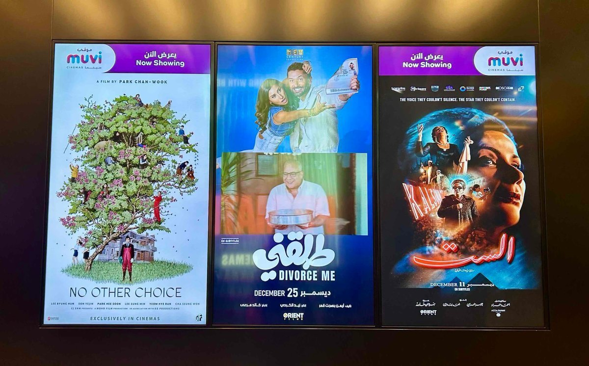
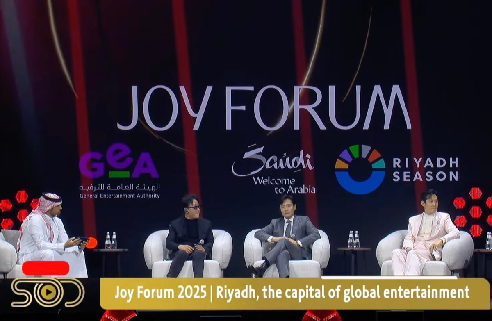

2026년 1월 8일, 박찬욱 감독의 영화 〈어쩔수가없다(No Other Choice)〉가 사우디아라비아의 대표 극장 체인을 통해 사우디아라비아 전역에 정식 개봉했다. 통신원은 리야드(Riyadh)의 한 극장을 직접 찾아 영화를 관람했으며, 상영 후 현지 관객들과 한국어 및 한국 문화를 공부 중인 학생들을 만나 작품에 대한 반응을 살펴봤다.
이번 상영은 극장 체인별로 자막 제공 방식에 차이가 있었다. 복스 시네마스(VOX Cinemas)에서는 아랍어 자막만 제공됐고, 무비 시네마스(MUVI Cinemas)에서는 영어와 아랍어 자막이 함께 제공됐다. 사운드는 모두 한국어 원음으로 상영됐다. 저녁 회차의 경우 좌석이 거의 매진되며 작품에 대한 현지 관객의 높은 관심을 실감하게 했다.

▲ 리야드 현지 영화관에 걸린 영화 〈어쩔수가없다〉 극장 포스터 — 출처: 통신원 촬영
공감과 낯섦 사이, 사우디 관객이 마주한 박찬욱 영화
현장에서 만난 한 현지 남성 관객은 커피 사업으로 한국을 6개월에 한 번씩 방문하고 있으며, 평소 한국 문화 전반에 관심이 많다고 밝혔다. 그는 한국 영화가 개봉했다는 소식을 듣고 바로 극장을 찾았으며, 작품을 흥미롭게 감상했다고 전했다. 또 다른 현지 여성 관객 하임(Haim)은 한국 영화의 팬으로, 특히 사운드트랙이 인상 깊었으며 주인공의 실직이라는 절박한 서사가 사우디 관객으로서도 충분히 공감 가능했다고 언급했다. 또한 봉준호 감독의 2017년 작품 〈옥자〉를 언급하며 "한국 영화는 자연을 이야기 속으로 끌어들이는 방식이 인상적이다"라며 소감을 이야기했다. 영화 〈어쩔수가없다〉에서도 나무를 베고 종이를 만들어가는 과정이 반복적으로 등장해서, 이에 대해 강한 인상을 받았다고 했다.
한국어를 공부 중인 현지 학생 달랄(Dalal)은 "은유법과 숨겨진 의미가 신선했다"라며 작품을 극찬했다. 또한 "시작부터 분위기가 형성됐고 연기가 매우 현실적이었다"는 반응을 보였다. 다만 '팬티 장면'으로 언급된 특정 장면은 사우디 관객에게 다소 당황스럽고 낯선 충격으로 받아들여졌다. 한 관객은 "지금도 완전히 이해되지는 않지만, 그래서 오히려 더 신선하게 느껴졌다"라고 말했다.
한편 현지에 거주 중인 스페인 출신의 남성 관객은 〈올드보이(Oldboy)〉를 비롯한 박찬욱 감독의 이른바 '복수 3부작'을 모두 관람해 온 팬이라고 밝히며, 해당 장면이 완전히 이해되지는 않았지만 강한 인상을 남겼다고 평가했다. 그는 "한국 영화는 인간의 어두운 내면과 그로테스크한 감정을 미학적으로 가감 없이 드러내는 경향이 있다. 보통의 사람들로 시작해 이야기를 비틀어 전개한다"라고 덧붙였다.
남성 관객 증가, '이병헌 효과'
현지 아랍 남성 관객의 비중도 눈에 띄었다. 이에 현지에서 한국어와 한국 문화를 공부하고 있는 이만(Eman)은 통상 한국 문화 콘텐츠는 여성 팬층이 두드러진다는 인식과 달리, 이번 상영에서는 이병헌의 연기를 보고 싶어 극장을 찾는 관객이 적지 않다고 전했다. 이는 이병헌이 출연한 〈오징어 게임〉의 글로벌 인지도와 더불어, 그가 2025년 10월 리야드에서 열린 조이 포럼(Joy Forum)에 참석해 현지 관객과 직접 교류한 영향이 이어졌다는 분석이다. 당시 포럼에서는 글로벌 제작 환경과 스트리밍 시대의 콘텐츠 경쟁력, 문화 교류의 가능성 등이 논의됐고, 사우디 영화와 한국 영화의 상호 교류에 대한 기대도 함께 언급됐다.

▲ 조이 포럼(Joy Forum)에 참석한 윤제균 감독, 이병헌 배우, 이정재 배우 — 출처: 사우디 온 디맨드(Saudi On Demand) 유튜브 채널(@SaudiOnDemand)
사우디 현지 관객의 일반적인 경향으로는 사회적 갈등이나 불편함을 전면적으로 드러내는 작품보다 비교적 완만한 서사를 선호하는 분위기가 관찰된다. 이집트나 레바논 등 비교적 오랜 영화 산업 전통을 가진 국가들과 달리, 사우디의 자국 영화 시장은 아직 형성 단계에 있는 편이다. 이러한 맥락에서 한국 영화 〈어쩔수가없다〉의 사우디 전역 상영과 그에 대한 높은 관심은 사우디 극장가에서 한국 작가주의 영화(auteur film)의 수용 범위가 점차 확장되고 있음을 보여준다.
사진 출처 및 참고자료
복스 시네마스(Vox Cinemas), ksa.voxcinemas.com
무비 시네마스(Muvi Cinemas), muvicinemas.com
조이 포럼(Joy Forum), joyforum.com
사우디 온 디맨드(Saudi On Demand) 유튜브 채널(@SaudiOnDemand) (2025.10.16). Live Streaming | Joy Forum 2025 — The Future of Entertainment, youtube.com
≪타임 아웃 리야드 (Time Out Riyadh)≫ (2025.10.13). JOY Forum returns to Riyadh Season 2025 for another powerful meet, timeoutriyadh.com